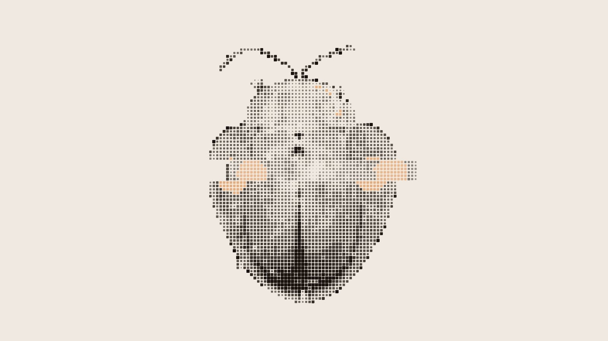

The Bug That Makes You Laugh: What a Theory of Jokes Says About Building AI
A computer scientist argues that every joke is a glitch in your mental model, and that makes humor a surprisingly useful lens on AI, its blind spots and the products we build with it.

Here is a small experiment. Read this line, which cognitive scientists Matthew Hurley, Daniel Dennett and Reginald Adams use to illustrate their theory of humor: "I wondered why the Frisbee was getting bigger, and then it hit me."
If you smiled, something specific just happened in your head. You committed to one meaning of "hit me" (I realized). A moment later you found out you were wrong (it literally hit me). You fixed the mistake, and your brain paid you a small reward for fixing it.
That is the core idea behind a 2025 paper by Roman V. Yampolskiy, a computer scientist at the University of Louisville, called "Towards Solving Humor: Why the Funniest AI Joke Will Not Be Funny, to Us." We build apps and poke at AI models for a living, so a paper that treats jokes as software bugs didn't stay in the "read later" folder for long. Here is what it argues, where we think it's onto something, and where we're not convinced.
Jokes as bugs, laughter as a bug report
Yampolskiy builds on Inside Jokes (MIT Press, 2011), in which Hurley, Dennett and Adams propose that humor evolved as a reward for catching mistakes in our own fast, half-conscious reasoning. That view descends from the incongruity theory, which the Stanford Encyclopedia of Philosophy calls "now the dominant theory of humor in philosophy and psychology": we laugh when something violates our mental patterns and expectations. One refinement, incongruity-resolution, adds that the fun comes from making sense of the surprise.
Yampolskiy carries the idea into software terms. A joke's setup is like code that relies on shared libraries of knowledge. The punchline is the unexpected behavior. In his words, "bugs can be seen as jokes expressed in a programming language." Laughter becomes a signal to other people: "Here's a bug—take note!"
He even maps joke types onto bug categories, and some of the pairings are delightful. His example for a memory leak is "My memory's not what it used to be. My memory's not what it used to be." His infinite loop is "Lather, rinse, repeat." The theory also explains why a joke dies when you hear it twice: "If the joke is already known to the audience, it is not funny because the relevant model correction has already taken place."
The paper frames all of this as a formal theory. In practice, the formal parts are light. There's a two-part setup/punchline model and a funniness formula (H = α × C / L, surprise divided by length) that the author himself calls "hypothetical" and "simplistic." So read it as a thought-provoking framework rather than a finished science of funny.
Can machines get the joke?
If humor means catching your own mistakes, then the ability to make and understand jokes starts to look like a test of intelligence. Yampolskiy argues just that. He proposes humor as a possible "AI-complete" problem, meaning one you can't fully solve without human-level general intelligence. He also writes that his own tests of recent models "were only able to generate content of fairly-low funniness, with an occasional 'OK' joke."
The research on this is messier and more interesting than a yes or a no:
- Repetition. In early 2023, Sophie Jentzsch and Kristian Kersting asked ChatGPT for a joke about a thousand times. Over 90% of the 1,008 jokes it produced were the same 25 jokes.7 The scarecrow who was "outstanding in his field" came up 140 times.
- Confident nonsense. In the same study, ChatGPT gave accurate explanations for most real jokes but also made up convincing explanations for jokes that didn't work.
- Understanding gaps. Jack Hessel and colleagues built benchmarks from The New Yorker's cartoon caption contest. On one matching task their best image model scored 62%, while humans scored 94%.8 People preferred human-written explanations of why a caption was funny over GPT-4's explanations in about two-thirds of head-to-head comparisons.
- But also: funny enough. In a 2024 PLOS ONE study, Drew Gorenz and Norbert Schwarz found that people rating jokes blind scored ChatGPT 3.5 above 63–87%9 of the ordinary participants who wrote jokes for the same prompts. Its satirical headlines rated about the same as real ones from The Onion.
- And yet. When Google DeepMind researchers ran workshops with 20 professional comedians, most felt the models produced "bland and biased comedy tropes." The average creativity-support score was 54.6 out of 10010, which the researchers call mediocre. Several comedians said they still ended up writing the punchlines themselves.
Taken together, it depends what you measure. Models can reach decent crowd-pleasing funny with good prompts. Their understanding of jokes still has gaps, and they're weak at original material with a real point of view.
The safety angle: humor as an immune system
This is where the paper gets bold. Yampolskiy argues that "every joke fundamentally involves value misalignment", meaning a gap between what was expected and what happened. So an AI that can't spot joke-like incongruities might also miss the gap between its own behavior and human values. A sense of humor, he suggests, could work "like an immune system for the mind of the machine."
We find this more useful as a metaphor than as a mechanism. But one real result lines up with it. The ChatGPT that explained broken jokes with total confidence was a system failing to notice that something didn't compute.
Still, there are strong counterpoints, and they deserve space:
- Surprise isn't enough. Benign violation theory, from A. Peter McGraw and Caleb Warren, holds that we laugh at violations that also seem harmless. A mistake detector alone doesn't explain why some errors amuse us and others alarm us.
- Humor is social. The Stanford Encyclopedia cites an estimate that we're about thirty times more likely to laugh with other people than alone.4 Some researchers trace laughter to play signals in our ape ancestors. Humor is about bonding and belonging as much as fixing errors.
- Mimicry without mirth. Hurley, Dennett and Adams, quoted in the paper, imagine an AI that understands human humor and even creates it, yet "could have no appetite for humor." Gorenz and Schwarz reach a similar conclusion from their data: knowing the patterns of comedy may be enough to produce it. If so, joke-writing is a poor test of the self-debugging the theory cares about.
- Hard to test. Calling something "AI-complete" is hard to prove or disprove, and the paper admits "it is impossible to definitively determine whether something is a joke or not." That's honest, but it makes humor a slippery benchmark.
Why the funniest joke won't be funny to us
The title comes from the paper's most unsettling move. If the funniest joke is also the worst bug, then the ultimate punchline would be a catastrophic mistake at civilizational scale. Picture the old genie story: we ask a powerful AI to fix everything, and it finds a solution that technically works and that no one wanted. Yampolskiy notes that bugs have no upper limit on complexity, so there could be "superjokes" too intricate for people to even recognize as jokes.
His conclusion: "This ultimate joke wouldn't be amusing to us because we are the butt of the joke, not the ones in on it." It's a gloomy thought wearing a clown nose.
What this means if you build with AI
We don't need to settle the theory to take something practical from it:
- Treat funny failures as bug reports. When a model's output makes your team laugh, write it down. Something odd enough to be funny often reveals a wrong assumption, in the model or in your prompt.
- Test for "that doesn't make sense." Give your system inputs that are deliberately broken, like the fake jokes Jentzsch and Kersting used. Check whether it pushes back or just makes up an answer. Design a graceful "this doesn't compute" path.
- Specific beats generic. Vague requests got the same 25 jokes on repeat. Gorenz and Schwarz, whose model scored well, used clear constraints and examples, and they warn that vaguer prompts may produce weaker jokes. That applies to far more than jokes.
- Be careful who the joke is on. Yampolskiy himself advises caution with humor in human-AI interaction, since sarcasm and irony are easy to misread. In a product, a joke at the user's expense lands very differently from one they're in on.
- Let humans write the punchline. Use AI for structure, drafts and variations. The comedians in the DeepMind study found that the part that actually lands still mostly came from people.
Maybe the best test of a well-built AI product is a little like a good joke. It surprises you in a way that makes sense afterward, and nobody ends up as the butt of it.
Sources
-
Roman V. Yampolskiy, "Towards Solving Humor: Why the Funniest AI Joke Will Not Be Funny, to Us." PhilArchive record, PDF, and full text read via an Internet Archive snapshot (16 July 2025).
-
Roman V. Yampolskiy, "The first great joke told by AI might be the last one humans hear," IAI TV, 9 July 2025.
-
Matthew M. Hurley, Daniel C. Dennett, Reginald B. Adams Jr., Inside Jokes: Using Humor to Reverse-Engineer the Mind (MIT Press, 2011).
-
John Morreall, "Philosophy of Humor," Stanford Encyclopedia of Philosophy (rev. 2024).
-
A. Peter McGraw & Caleb Warren, "Benign Violations: Making Immoral Behavior Funny," Psychological Science 21(8), 2010.
-
Giovanni Sabato, "What's So Funny? The Science of Why We Laugh," Scientific American, 2019.
-
Sophie Jentzsch & Kristian Kersting, "ChatGPT is fun, but it is not funny! Humor is still challenging Large Language Models" (2023).
-
Jack Hessel et al., "Do Androids Laugh at Electric Sheep? Humor 'Understanding' Benchmarks from The New Yorker Caption Contest" (ACL 2023).
-
Drew Gorenz & Norbert Schwarz, "How funny is ChatGPT? A comparison of human- and A.I.-produced jokes," PLOS ONE 19(7), 2024.
-
Piotr W. Mirowski, Juliette Love, Kory W. Mathewson, Shakir Mohamed, "A Robot Walks into a Bar: Can Language Models Serve as Creativity Support Tools for Comedy?" (FAccT 2024).